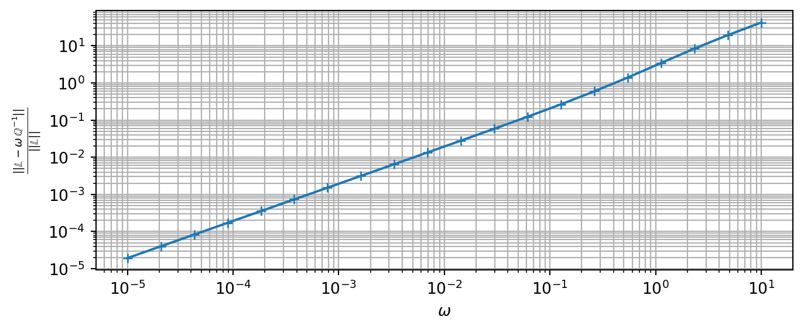

Appendix B — Hill polarization tensor in elasticity
This section recalls some results about the calculation of the Hill polarization tensors related to a matrix of stiffness \(\mathbb{C}\) and an ellipsoid \(\mathcal{E}_{\uu{A}}\) of equation \[
\uv{x}\in\mathcal{E}_{\uu{A}}
\quad\Leftrightarrow\quad
\uv{x}\cdot(\trans{\uu{A}}\cdot\uu{A})^{-1}\cdot\uv{x}\leq 1
\] where \(\uu{A}\) is an invertible second-order tensor so that \(\trans{\uu{A}}\cdot\uu{A}\) is a positive definite symmetric tensor associated to 3 radii (eigenvalues \(a\geq b \geq c\) possibly written \(\rho_1 \geq \rho_2 \geq \rho_3\) for convenience) and 3 angles (orientation of the frame of eigenvectors \(\uv{e}_1, \uv{e}_2, \uv{e}_3\)) \[
\trans{\uu{A}}\cdot\uu{A}=a^2 \uv{e}_1\otimes\uv{e}_1 + b^2 \uv{e}_2\otimes\uv{e}_2 + c^2 \uv{e}_3\otimes\uv{e}_3 = \sum_{i=1}^3 \rho_i \uv{e}_i\otimes\uv{e}_i
\tag{B.1}\]
General expression
A general expression of the elastic polarization tensor is derived in (Willis, 1977) (see also (Mura, 1987)) \[\begin{aligned}
\uuuu{P}(\uu{A},\uuuu{C})&=\frac{1}{4\pi}
\int_{\norm{\uv{\zeta}}=1}
(\uu{A}^{-1}\cdot\uv{\zeta})\sotimes
\Big((\uu{A}^{-1}\cdot\uv{\zeta})\cdot\uuuu{C}
\cdot(\uu{A}^{-1}\cdot\uv{\zeta})\Big)^{-1}
\sotimes(\uu{A}^{-1}\cdot\uv{\zeta})
\ud S_\zeta\\
&=
\frac{\det{\uu{A}}}{4\pi}
\int_{\norm{\uv{\xi}}=1}
\frac{\uv{\xi}\sotimes
(\uv{\xi}\cdot\uuuu{C}
\cdot\uv{\xi})^{-1}
\sotimes\uv{\xi}}{\norm{\uu{A}\cdot\uv{\xi}}^3}
\ud S_{\xi}
\end{aligned} \tag{B.2}\]
When \(\uuuu{C}\) is arbitrarily anisotropic, it is necessary to resort to numerical cubature to estimate \(\uuuu{P}\) as proposed in (Ghahremani, 1977), (Gavazzi and Lagoudas, 1990) or (Masson, 2008). However in some cases of anisotropy, analytical solutions are available ((Withers, 1989), (Barthélémy, 2020)). The case of isotropic matrix is particularly developed in the next section.
Isotropic matrix
In this section, the matrix is assumed isotropic so that its stiffness tensor writes by means of a bulk \(k\) and shear \(\mu\) or Lamé \(\lambda\) and \(\mu\) moduli or even Young modulus \(E\) and Poisson ratio \(\nu\) with \(k=\frac{E}{3(1-2\nu)}\) and \(\mu=\frac{E}{2(1+\nu)}\). \[\begin{aligned}
\uuuu{C} =& {} 3k\uuuu{J}+2\mu\uuuu{K} = 3\lambda\uuuu{I}+2\mu\uuuu{K}\\
& \quad\textrm{with}\quad J_{ijkl}=\frac{\delta_{ij}\delta_{kl}}{3},
I_{ijkl}=\frac{\delta_{ik}\delta_{jl}+\delta_{il}\delta_{jk}}{2}
\textrm{ and }
\uuuu{K}=\uuuu{I}-\uuuu{J}
\end{aligned} \tag{B.3}\]
Introducing (B.3) in (B.2) leads to after some algebra \[
\uuuu{P}=
\frac{1}{\lambda+2\,\mu}
\uuuu{U}
+\frac{1}{\mu}(\uuuu{V}-\uuuu{U})
\] where the tensors \(\uuuu{U}\) and \(\uuuu{V}\), depending only on the ellipsoidal tensor \(\uu{A}\) of (B.1), are given by (see (Barthélémy, 2020)) \[\begin{aligned}
\uuuu{U} &= \frac{\det{\uu{A}}}{4\pi}
\int_{\norm{\uv{\xi}}=1}
\frac{\uv{\xi}\otimes\uv{\xi}\otimes\uv{\xi}\otimes\uv{\xi}}
{\norm{\uu{A}\cdot\uv{\xi}}^3}\ud S_{\xi}\\
&=
\frac{1}{4\pi}
\int_{\norm{\uv{\zeta}}=1}
\frac{%
(\uu{A}^{-1}\cdot\uv{\zeta})
\otimes
(\uu{A}^{-1}\cdot\uv{\zeta})
\otimes
(\uu{A}^{-1}\cdot\uv{\zeta})
\otimes
(\uu{A}^{-1}\cdot\uv{\zeta})
}{\norm{\uu{A}^{-1}\cdot\uv{\zeta}}^4}
\ud S_{\zeta}
\end{aligned}\] and \[\begin{aligned}
\uuuu{V} &= \frac{\det{\uu{A}}}{4\pi}
\int_{\norm{\uv{\xi}}=1}
\frac{\uv{\xi}\sotimes\uu{1}\sotimes\uv{\xi}}
{\norm{\uu{A}\cdot\uv{\xi}}^3}\ud S_{\xi}\\
&=
\frac{1}{4\pi}
\int_{\norm{\uv{\zeta}}=1}
\frac{%
(\uu{A}^{-1}\cdot\uv{\zeta})
\sotimes
\uu{1}
\sotimes
(\uu{A}^{-1}\cdot\uv{\zeta})
}{\norm{\uu{A}^{-1}\cdot\uv{\zeta}}^2}
\ud S_{\zeta}
\end{aligned}\] For an arbitrary ellipsoid defined by (B.1), the components of \(\uuuu{U}\) and \(\uuuu{V}\) write \[\begin{aligned}
U_{iiii}&=\frac{3(I_i-\rho_i^2I_{ii})}{2}
\quad\forall\, i\in\{1,2,3\}\\
U_{iijj}=U_{ijij}=U_{ijji}&=\frac{I_j-\rho_i^2I_{ij}}{2}
=\frac{I_i-\rho_j^2I_{ij}}{2}
\quad\forall\, i\neq j\in\{1,2,3\}
\end{aligned}\] and \[\begin{aligned}
V_{iiii}&=I_i\quad\forall\, i\in\{1,2,3\}\\
V_{ijij}=V_{ijji}&=\frac{I_i+I_j}{4}
\quad\forall\, i\neq j\in\{1,2,3\}
\end{aligned}\] where the coefficients \(I_i\) and \(I_{ij}\) are given by (note that \(I_i\) and \(I_{ij}\) are adapted from those provided in (Kellogg, 1929) and (Eshelby, 1957): they differ by a factor of \(4\pi/3\) for \(I_{ij}\) with \(i\neq j\) and by \(4\pi\) for the others)
if \(a > b > c\)\[\begin{aligned}
I_1&=\frac{a\,b\,c}{(a^2-b^2)\sqrt{a^2-c^2}}\,
\left({\cal F}-{\cal E}\right)\\
I_3&=\frac{a\,b\,c}{(b^2-c^2)\sqrt{a^2-c^2}}\,
\left(\frac{b\sqrt{a^2-c^2}}{a\,c}-
{\cal E}\right)\\
I_2&=1-I_1-I_3\\
I_{ij}&=\frac{I_j-I_i}{\rho_i^2-\rho_j^2}\quad\forall\, i\neq j\in\{1,2,3\}\\
I_{ii}&=\frac{1}{3}\left(
\frac{1}{\rho_i^2}-
\sum_{j\neq i}I_{ij} \right)
\quad\forall\, i\in\{1,2,3\}
\end{aligned}\]
where \({\cal F}={\cal F}(\theta,\kappa)\) and \({\cal E}={\cal E}(\theta,\kappa)\) are respectively the elliptic integrals of the first and second kinds (see (Abramowitz and Stegun, 1972)) of amplitude and parameter \[
\theta=\arcsin{\sqrt{1-\frac{c^2}{a^2}}}
\quad;\quad
\kappa=\sqrt{\frac{a^2-b^2}{a^2-c^2}}
\]
if \(a = b = c\) (sphere) \[\begin{aligned}
I_1=I_2=I_3&=\frac{1}{3}\\
I_{ij}&=\frac{1}{5\,a^2}\quad\forall\, i,j\in\{1,2,3\}
\end{aligned}\]
In this last case of spherical inclusion (\(\uu{A}=\uu{1}\)), \(\uuuu{U}\) and \(\uuuu{V}\) are simply decomposed as \[
\uuuu{U}=\frac{1}{3}\uuuu{J}+\frac{2}{15}\uuuu{K}
\quad\textrm{ and }\quad
\uuuu{V}=\frac{1}{3}\uuuu{I}
\]
Case of cracks
The case of cracks corresponds to ellipsoids for which the smallest radius is very small compared to the two others, in other words the characteristic tensor \(\uu{A}\) (B.1) can be written here \[
\uu{A}=
\uv{\ell}\otimes\uv{\ell}+
\eta\,\uv{m}\otimes\uv{m}+
\omega\,\uv{n}\otimes\uv{n}
\quad\textrm{with}\quad
\eta=\frac{b}{a}
\quad\textrm{and}\quad
\omega=\frac{c}{a}
\]
Fig. B.1: Ellipsoidal crack
In the case of cracks, it is useful to introduce the second Hill polarization tensor defined as \[
\uuuu{Q}=\uuuu{C}-\uuuu{C}:\uuuu{P}:\uuuu{C}
\] and in particular \(\lim_{\omega\to 0}\omega\,\uuuu{Q}^{-1}\) in which it is recalled that \(\uuuu{P}\) and thus \(\uuuu{Q}\) depend on \(\omega\) such that the components \(\left(\uuuu{Q}^{-1}\right)_{nijk}\) (with \(n\) corresponding to the crack normal) behave as \(1/\omega\) when \(\omega\) tends towards \(0\). The analytical expressions of this limit are fully detailed in (Barthélémy et al., 2021) which recalls in particular that \(\uuuu{L}\) actually derives from a symmetric second-order tensor \(\uu{B}\) as \[
\uuuu{L}=
\lim_{\omega\to 0} \omega\,\uuuu{Q}^{-1}
=\frac{3}{4}\,\uv{n}\sotimes\uu{B}\sotimes\uv{n}
\tag{B.4}\]
For an arbitrarly anisotropic matrix, an algorithm allowing to estimate the limit (B.4) is proposed in (Barthélémy, 2009) whereas in the isotropic case \(\uu{B}\) writes \[
\uu{B}=
B_{nn}\,\uv{n}\otimes\uv{n}
+
B_{mm}\,\uv{m}\otimes\uv{m}
+
B_{\ell\ell}\,\uv{\ell}\otimes\uv{\ell}
\] with \[\begin{aligned}
B_{nn}&=\frac{8\,\eta\,(1-\nu^2)}{3\,E}\,
\frac{1}{\mathcal{E}_\eta}\label{eq:Bnn}\\
B_{mm}&=\frac{8\,\eta\,(1-\nu^2)}{3\,E}\,
\frac{1-\eta^2}{\left(1-(1-\nu)\,\eta^2\right)
\,\mathcal{E}_\eta-\nu\,\eta^2\,\mathcal{K}_\eta}\\
B_{\ell\ell}&=\frac{8\,\eta\,(1-\nu^2)}{3\,E}\,
\frac{1-\eta^2}{(1-\nu-\eta^2)\,\mathcal{E}_\eta+\nu\,\eta^2\,\mathcal{K}_\eta}
\end{aligned}\] where \(\mathcal{K}_\eta=\mathcal{K}(\sqrt{1-\eta^2})\) and \(\mathcal{E}_\eta=\mathcal{E}(\sqrt{1-\eta^2})\) are the complete elliptic integrals of respectively the first and second kind (see (Abramowitz and Stegun, 1972)). If the crack is circular, the components of \(\uu{B}\) become \[
B_{nn}=\frac{16\,(1-\nu^2)}{3\,\pi\,E}
\quad\textrm{;}\quad
B_{mm}=B_{\ell\ell}=\frac{B_{nn}}{1-\nu/2}
\]
Calculation of the crack compliance \(\uuuu{L}=\lim_{\omega\to 0}\omega\,\uuuu{Q}^{-1}\)
Note that in Echoes it is necessary to provide an aspect ratio \(\omega\) for the crack even if the crack compliance is actually calculated as a limit (not depending on \(\omega\))
ω =1.e-4L = crack_compliance(spheroidal(ω), C) ;print(L)
Checking the aspect ratio for which \(\omega\,\uuuu{Q}^{-1}\approx \lim_{\omega\to 0}\omega\,\uuuu{Q}^{-1}\) is acceptable
Code
tω = np.logspace(-5,1,20)tabδ = []for ω in tω: Q = hill_dual(spheroidal(ω), C) Lω = ω*np.linalg.inv(Q) δL = np.linalg.norm(Lω-L)/np.linalg.norm(L) tabδ.append(δL)plt.figure(figsize=(8,3))plt.loglog(tω,tabδ,'+-')plt.xlabel(r"$\omega$")plt.ylabel(r"$\frac{||\mathbb{L}-\omega\,\mathbb{Q}^{-1}||}{||\mathbb{L}||}$")plt.grid(True,which='both')plt.show()

Fig. B.2: Influence of the aspect ratio on the contribution tensor
Abramowitz, M., Stegun, I.A., 1972. Handbook of Mathematical Functions. National Bureau of Standards - Applied Mathematics Series - 55, Washington D.C.
Barthélémy, J.-F., 2020. Simplified approach to the derivation of the relationship between Hill polarization tensors of transformed problems and applications. International Journal of Engineering Science 154, 103326. https://doi.org/10.1016/j.ijengsci.2020.103326
Barthélémy, J.-F., 2009. Compliance and Hill polarization tensor of a crack in an anisotropic matrix. International Journal of Solids and Structures 46, 4064–4072. https://doi.org/10.1016/j.ijsolstr.2009.08.003
Barthélémy, J.-F., Sevostianov, I., Giraud, A., 2021. Micromechanical modeling of a cracked elliptically orthotropic medium. International Journal of Engineering Science 161, 103454. https://doi.org/10.1016/j.ijengsci.2021.103454
Eshelby, J.D., 1957. The determination of the elastic field of an ellipsoidal inclusion, and related problems. Proceedings of the Royal Society of London. Series A. Mathematical and Physical Sciences 241, 376–396. https://doi.org/10.1098/rspa.1957.0133
Gavazzi, A.C., Lagoudas, D.C., 1990. On the numerical evaluation of Eshelby’s tensor and its application to elastoplastic fibrous composites. Computational Mechanics 7, 13–19. https://doi.org/10.1007/BF00370053
Ghahremani, F., 1977. Numerical evaluation of the stresses and strains in ellipsoidal inclusions in an anisotropic elastic material. Mechanics Research Communications 4, 89–91. https://doi.org/10.1016/0093-6413(77)90018-0
Kellogg, O.D., 1929. Potential theory. Berlin : Springer-Verlag.
Masson, R., 2008. New explicit expressions of the Hill polarization tensor for general anisotropic elastic solids. International Journal of Solids and Structures 45, 757–769. https://doi.org/10.1016/j.ijsolstr.2007.08.035
Willis, J.R., 1977. Bounds and self-consistent estimates for the overall properties of anisotropic composites. Journal of the Mechanics and Physics of Solids 25, 185–202. https://doi.org/10.1016/0022-5096(77)90022-9
Withers, P.J., 1989. The determination of the elastic field of an ellipsoidal inclusion in a transversely isotropic medium, and its relevance to composite materials. Philosophical Magazine A 59, 759–781. https://doi.org/10.1080/01418618908209819